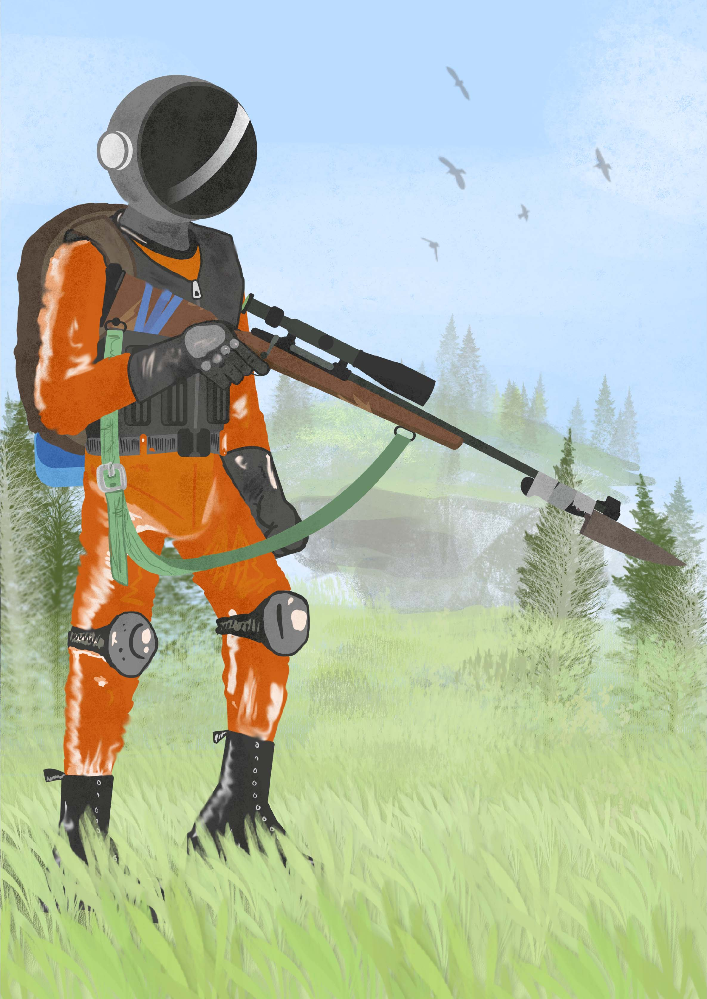
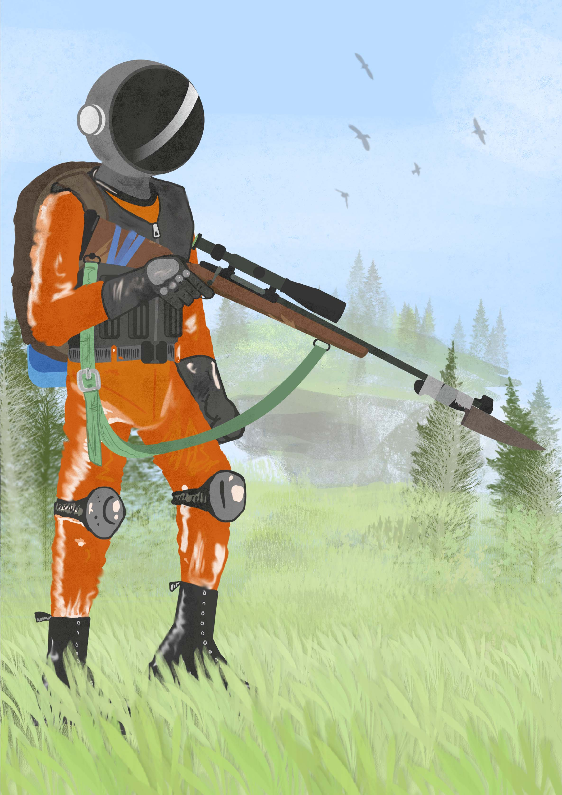

Concept Art
Een concept design voor een game wereld.
Een van mijn eerste resulaten van digitaal tekenen. Game design is een beroep en opleiding op zich, maar een concept uitdenken is iets waar ik veel plezier uit haal.
Het idee voor de game is dat de planeet uiteen is geëxplodeerd. Alle brokken aarde zijn nu kleine planeten op zich, met allen een eigen atmosfeer. De speler kan met de juiste middelen en uitrusting deze verlaten werelddelen verkennen. Ook zijn er veel delen van de planeet blootgesteld aan radiatie; leven op deze delen is gemuteerd en gevaarlijk.